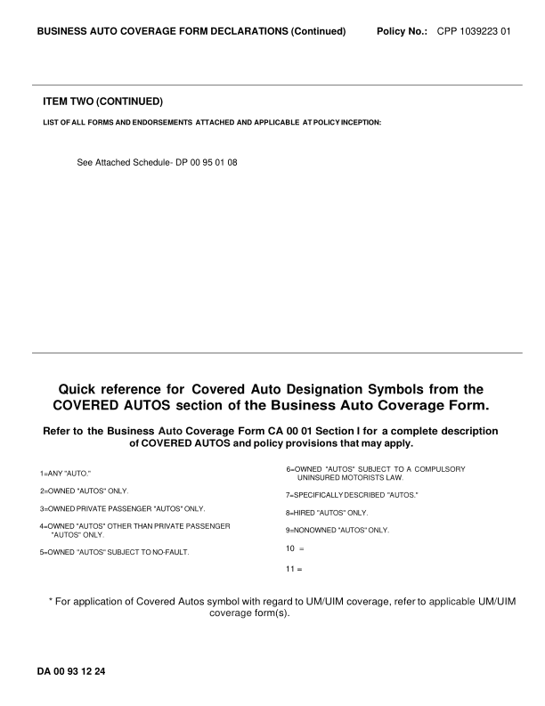
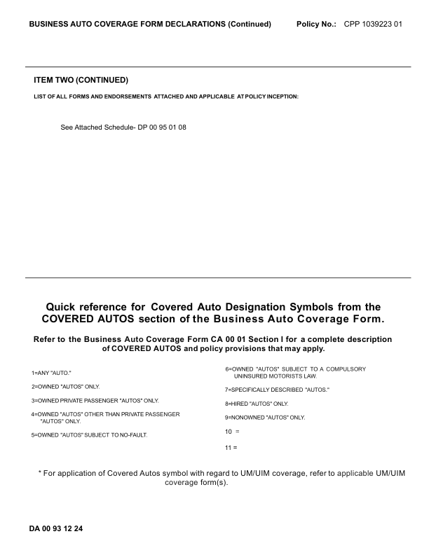
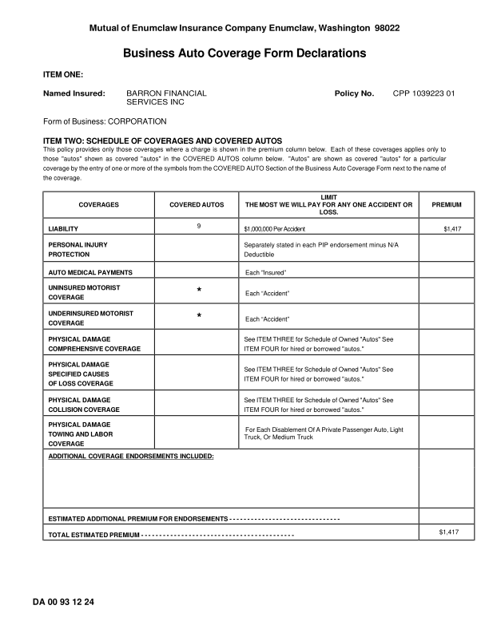
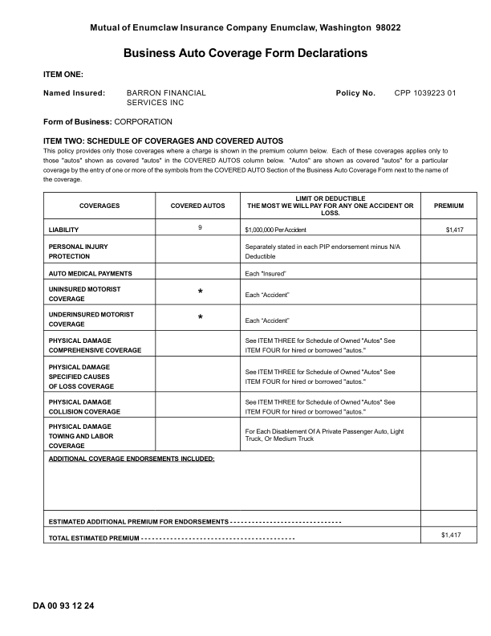
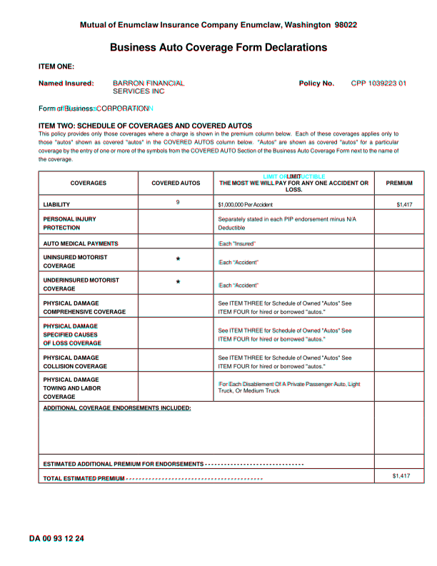

GhostDraft (TST) — page 2

HTML designer — page 2

Overlay — 3.5% pixels differ

DA0093_1224_no_units_NONPAR: DIFFERENT score 99.8% pages golden 2 html 2 (pages with text) words golden 417 html 419 missing 0 extra 2 EXTRA (in the HTML render, not in the GhostDraft golden) [DEDUCTIBLE] <= PROTECTION Deductible [OR] <= Truck, Or Medium Truck golden C:\src\fact-docgen\src\Moe.Commercial.Documents.Generation.Integration.Tests\TestData\Snapshots\DA0093_1224_no_units_NONPAR\GoldenSnapshot.txt template C:\src\fact-poc\output\ghostdraft\batch\DA0093-1224.json serverxml C:\src\fact-poc\output\ghostdraft\serverxml\DA0093_1224_no_units_NONPAR\ServerXml.xml



moved Business: (+2.8, -0.2)pt moved CORPORATION (+7.3, -0.2)pt moved LIMIT (-32.9, -0.3)pt size Form 10.0 -> 10.0pt size of 10.0 -> 10.0pt size Business: 10.0 -> 10.0pt


moved POLICY (-2.2, +0.1)pt moved INCEPTION: (-2.2, +0.1)pt moved . (-2.2, +0.3)pt size the 15.7 -> 15.0pt size Business 15.7 -> 15.0pt size Auto 15.7 -> 15.0pt size Coverage 15.7 -> 15.0pt size Form. 15.7 -> 15.0pt